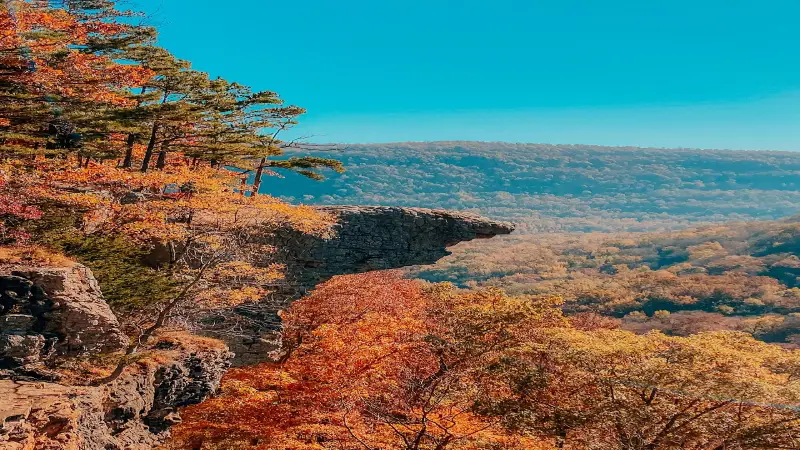
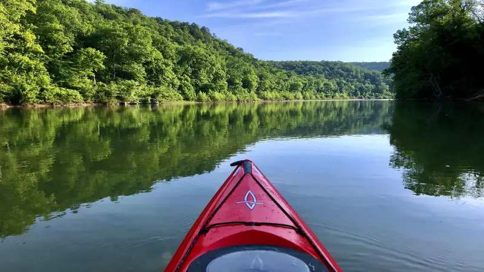
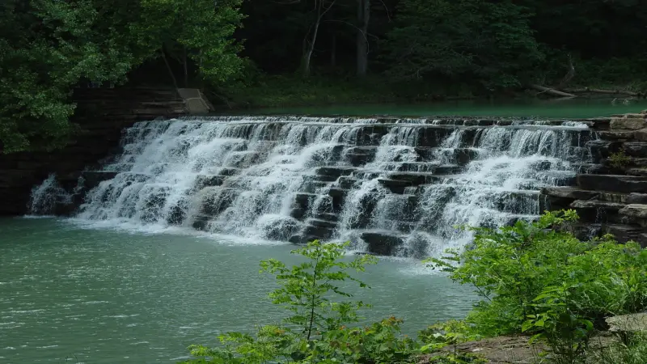

Hot Springs National Park
Experience the natural hot springs and historic bathhouses in Hot Springs National Park.
Experience the natural hot springs and historic bathhouses in Hot Springs National Park.

Enjoy a scenic hike with panoramic views from Whitaker Point.

Experience the sceninc beauty of the Buffalo River as you canoe through its many rapids.

Explore the unique geological formations and diverse wildlife at Devils Den State Park.
How do you want to spend your next day outside?
Find scenic walks and challenging hikes for your next trip outdoors.
Explore hikesTurn a little time off into a memorable Arkansas getaway.
Plan a weekend tripFind inspiration for a day on the water or another outdoor adventure.
Discover adventuresHere are some tips to help you prepare for your adventure in Arkansas: